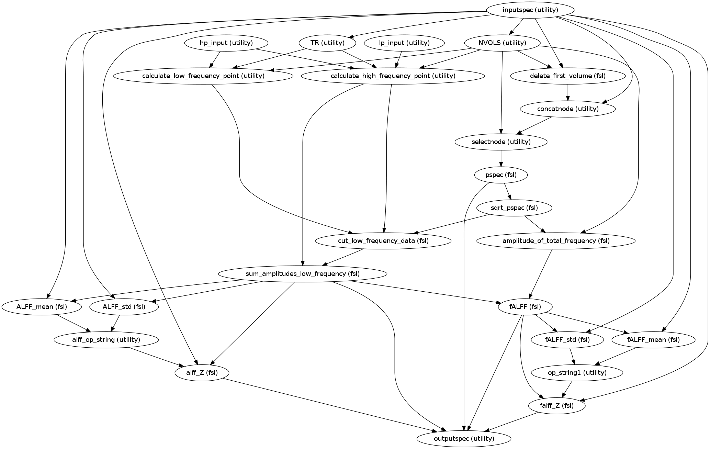

Calculate Amplitude of low frequency oscillations(ALFF) and fractional ALFF maps
| Parameters : | tr : (float) Temporal Resolution of the functional alff |
|---|---|
| Returns : | alff_workflow : workflow object
|
Notes
Workflow Inputs:
hp_input.hp : list (float)
high pass frequencies
lp_input.lp : list (float)
low pass frequencies
fwhm_input.fwhm : list (float)
full width half max for spatial alff_Z_to_standard_FWHMing
inputspec.rest_res : string (existing nifti file)
Nuisance signal regressed functional image
inputspec.rest_mask : string (existing nifti file)
A mask volume(derived by dilating the motion corrected functional volume) in native space
inputspec.rest_mask2standard : string (existing nifti file)
A mask volume(derived from the functional volume) in standard in standard space
Used in spatial alff_Z_to_standard_FWHMing the Z-transformed correlations in MNI space
inputspec.premat : string (existing affine transformation .mat file)
Specifies an affine transform that should be applied to the data prior to the non-linear warping(example_func2highres.mat).
inputspec.standard : string (existing nifti file)
FSL standard nifti file in user specified resolution
inputspec.fieldcoeff_file : string (existing nifti file)
File with warp coefficients/fields. This typically the output given by the --cout parameter of fnirt during registration step
Workflow Outputs:
outputspec.power_spectrum_distribution : string (nifti file)
outputs image containing the spectral power density of residual functional image
outputspec.alff_img : string (nifti file)
outputs image containing the sum of the amplitudes in the low frequency band
outputspec.falff_img : string (nifti file)
outputs image containing the sum of the amplitudes in the low frequency band divided by the amplitude of the total frequency
outputspec.alff_Z_img : string (nifti file)
outputs image containing Normalized ALFF Z scores across full brain in native space
outputspec.falff_Z_img : string (nifti file)
outputs image containing Normalized fALFF Z scores across full brain in native space
outputspec.alff_Z_2standard_img : string (nifti file)
outputs image containing normalized ALFF Z scores in MNI space
outputspec.falff_Z_2standard_img : string (nifti file)
outputs image containing normalized fALFF Z scores in MNI space
outputspec.alff_Z_2standard_fwhm_img : string (nifti file)
outputs image containing normalized ALFF Z scores in MNI space with spatial alff_Z_to_standard_FWHMing applied to them
outputspec.falff_Z_2standard_fwhm_img : string (nifti file)
outputs image containing normalized fALFF Z scores in MNI space with spatial alff_Z_to_standard_FWHMing applied to them
Order of Commands:
Compute the Power Spectrum
fslpspec
rest_res.nii.gz
power_spectrum_distribution.nii.gz
Compute square root of power spectrum
fslmaths
power_spectrum_distribution.nii.gz
-sqrt prealff_func_data_ps_sqrt.nii.gz
Extract the TR and Number of volumes(NVOLS) from the Nuisance signal regressed functional image
Calculate the High Frequency Point(n2) and Low Frequency Point(n1)
n1 = (HP * NVOLS * TR) -1
n2 = (LP * NVOLS * TR) - (HP * NVOLS * TR) + 1
Cut the low frequency data from the the whole frequency band
fslroi
prealff_func_data_ps_sqrt.nii.gz
prealff_func_ps_slow.nii.gz
n1
n2
Calculate ALFF as the sum of the amplitudes in the low frequency band
fslmaths
prealff_func_ps_slow.nii.gz
-Tmean
-mul n2
ALFF.nii.gz
Compute amplitude of total frequency
fslmaths
prealff_func_data_ps_sqrt.nii.gz
-Tmean
-mul NVOLS
-div 2
prealff_func_pssum_amplitudes_low_frequency.nii.gz
Compute fALFF as ALFF/amplitude of total frequency
fslmaths
ALFF.nii.gz
-div prealff_func_pssum_amplitudes_low_frequency.nii.gz
fALFF.nii.gz
Normalize ALFF/fALFF to Z-score across full brain
fslstats
ALFF.nii.gz
-k rest_mask.nii.gz
-m > mean_ALFF.txt ; mean=$( cat mean_ALFF.txt )
fslstats
ALFF.nii.gz
-k rest_mask.nii.gz
-s > std_ALFF.txt ; std=$( cat std_ALFF.txt )
fslmaths
ALFF.nii.gz
-sub ${mean}
-div ${std}
-mas rest_mask.nii.gz ALFF_Z.nii.gz
fslstats
fALFF.nii.gz
-k rest_mask.nii.gz
-m > mean_fALFF.txt ; mean=$( cat mean_fALFF.txt )
fslstats
fALFF.nii.gz
-k rest_mask.nii.gz
-s > std_fALFF.txt
std=$( cat std_fALFF.txt )
fslmaths
fALFF.nii.gz
-sub ${mean}
-div ${std}
-mas rest_mask.nii.gz
fALFF_Z.nii.gz
Register Z-transformed ALFF to standard space
applywarp
--ref = MNI152_T1_STANDARD_RES.nii.gz
--in = ALFF_Z.nii.gz
--out = ALFF_Z_2standard.nii.gz
--warp = highres2standard_warp.nii.gz
--premat = example_func2highres.mat
Register Z-transformed fALFF to standard space
applywarp
--ref = MNI152_T1_STANDARD_RES.nii.gz
--in = fALFF_Z.nii.gz
--out = fALFF_Z_2standard.nii.gz
--warp = highres2standard_warp.nii.gz
--premat = example_func2highres.mat
Spatially Smooth the ALFF results
fslmaths
ALFF_Z_2standard.nii.gz
-kernel gauss FWHM/ sqrt(8*ln(2))
-fmean
-mas rest_mask2standard.nii.gz
ALFF_Z_2standard_FWHM.nii.gz
Spatially Smooth the f/ALFF results
fslmaths
fALFF_Z_2standard.nii.gz
-kernel gauss FWHM/ sqrt(8*ln(2))
-fmean
-mas rest_mask2standard.nii.gz
fALFF_Z_2standard_FWHM.nii.gz
Workflow ALFF and fractional ALFF:
References
| [R1] | Zou, Q.-H., Zhu, C.-Z., Yang, Y., Zuo, X.-N., Long, X.-Y., Cao, Q.-J., Wang, Y.-F., et al. (2008). An improved approach to detection of amplitude of low-frequency fluctuation (ALFF) for resting-state fMRI: fractional ALFF. Journal of neuroscience methods, 172(1), 137-41. doi:10.10 |
Examples
>>> alff_w = create_alff(tr=2.0)
>>> alff_w.inputs.fwhm_input.fwhm = [4.5, 6]
>>> alff_w.get_node('fwhm_input').iterables = ('fwhm', [4.5, 6])
>>> alff_w.inputs.inputspec.standard = '/usr/share/fsl/4.1/data/standard/MNI_152_T1_2mm_nii.gz'
>>> alff_w.inputs.hp_input.hp = [0.01]
>>> alff_w.inputs.lp_input.lp = [0.1]
>>> alff_w.get_node('hp_input').iterables = ('hp',
[0.01])
>>> alff_w.get_node('lp_input').iterables = ('lp',
[0.1])
>>> alff_w.inputs.inputspec.premat = '/home/data/subject/func/example_func2highres.mat'
>>> alff_w.inputs.inputspec.rest_res = '/home/data/subject/func/rest_bandpassed.nii.gz'
>>> alff_w.inputs.inputspec.fieldcoeff_file = '/home/data/subject/func/highres2standard_warp.nii.gz'
>>> alff_w.inputs.inputspec.rest_mask2standard = '/home/data/subject/func/rest_mask2standard.nii.gz'
>>> alff_w.run()
Calculates the number of volumes in the given nifti images
| Parameters : | in_files : list (nifti files) |
|---|---|
| Returns : | out : list (int)
|
Computes the Temporal Resolution parameter from the image header. If TRa is not None then it compares the computed TR and the supplied if the difference is greater than 0.001 then it returns supplied TRa as the TR of the image and flashes a warning message
| Parameters : | in_files : list (nifti files) TRa : float
|
|---|---|
| Returns : | out : list (float)
|
Get the low frequency point
| Parameters : | TR : float
nvols : int
HP : float
|
|---|---|
| Returns : | n1 : float Low Frequency Point : |
Get the high frequency point
| Parameters : | TR : float
nvols : int
LP : float
HP : float
|
|---|---|
| Returns : | n2 : float High Frequency Point : |
Generate the Operand String to be used in workflow nodes to supply mean and std deviation to alff workflow nodes
| Parameters : | mean: string :
std_dev : string
|
|---|---|
| Returns : | op_string : string |
Build the operand string used by the workflow nodes
| Parameters : | n2 : list (float) |
|---|---|
| Returns : | strs : list (string)
|
Build the operand string used by the workflow nodes
| Parameters : | nvols : list (int) |
|---|---|
| Returns : | strs : list (string)
|
Compute the sigma value, given Full Width Half Max. Further it builds an operand string and returns it
| Parameters : | fwhm : float |
|---|---|
| Returns : | op_string : string |
Determine if each of the inputs are odd or even values and build a list of 0 and 1 depending on the truth value
| Parameters : | nvols : list (int) |
|---|---|
| Returns : | decisions : list (int) |